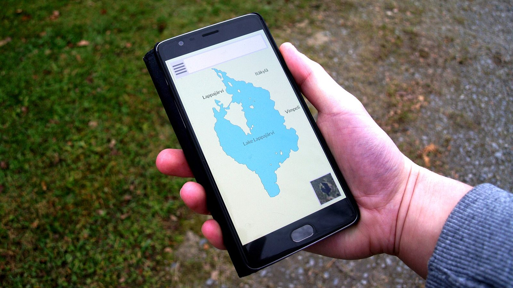

عندما يبحث شخص عن «مغسلة سيارات قريبة» أو «أفضل كافيه في الحي» أو «محل هدايا مفتوح الآن»، فإن أول ما يراه غالبًا ليس موقعًا إلكترونيًا، بل خريطة جوجل وتحتها ثلاثة أنشطة تجارية مع تقييماتها وصورها وأرقام هواتفها. هذا المكان الصغير في نتائج البحث هو ما يصنع الفرق بين محل يمتلئ بالزوار ومحل لا يعرفه إلا جيرانه.
الخبر الجيد أن الظهور هناك لا يحتاج ميزانية إعلانية. يحتاج ملفًا تجاريًا مكتملًا على جوجل، ومعلومات دقيقة، وتقييمات حقيقية من عملائك، ومتابعة منتظمة. في هذا الدليل نشرح خطوة بخطوة كيف تجهز ملف نشاطك التجاري على جوجل وتديره بحيث يجلب لك زيارات ومكالمات وطلبات.
ما هو ملف النشاط التجاري على جوجل ومن يحتاجه؟
ملف النشاط التجاري على جوجل (Google Business Profile) هو بطاقة مجانية تظهر في بحث جوجل وخرائط جوجل، وتعرض اسم نشاطك وعنوانه وساعات عمله ورقم هاتفه وصوره وتقييمات العملاء. ويستفيد منه بشكل خاص:
- الأنشطة ذات المقر الفعلي: المطاعم والمقاهي والصالونات والعيادات والمحلات ومراكز التدريب الرياضي.
- أنشطة الخدمات المتنقلة: مثل الصيانة والتنظيف والتوصيل، التي تخدم منطقة محددة دون أن يزورها العميل.
- المتاجر الإلكترونية التي لها مستودع أو نقطة استلام: لتعزيز الثقة وتسهيل الوصول.
أما المتجر الإلكتروني البحت الذي لا يستقبل عملاء ولا يخدم منطقة معينة، فاعتماده الأكبر يكون على أساسيات السيو للموقع نفسه.
إنشاء الملف وتوثيقه
ابحث أولًا عن اسم نشاطك في خرائط جوجل، فقد يكون هناك ملف أنشأه أحد العملاء أو أنشأته جوجل تلقائيًا، وعندها تطالب بملكيته بدل إنشاء ملف جديد. ثم اتبع الخطوات الأساسية:
- سجّل الدخول بحساب جوجل خاص بالعمل، لا بحسابك الشخصي، وأضف شريكًا أو موظفًا موثوقًا كمدير احتياطي.
- اكتب اسم النشاط كما هو مكتوب على اللافتة والفواتير، دون إضافة كلمات مفتاحية أو عروض إلى الاسم، فهذا مخالف لإرشادات جوجل وقد يؤدي إلى تعليق الملف.
- اختر التصنيف الأساسي بدقة، لأنه من أهم ما يحدد ظهورك في عمليات البحث، ثم أضف تصنيفات ثانوية مناسبة.
- حدد العنوان على الخريطة بدقة، أو حدد مناطق الخدمة إذا كنت تذهب إلى العملاء.
- أكمل التوثيق بالطريقة التي تقترحها جوجل لنشاطك، وقد تكون مكالمة أو رسالة أو فيديو قصيرًا يثبت وجود النشاط.
أكمل كل خانة: التفاصيل تصنع الثقة
الملف الناقص يرسل للعميل رسالة غير مقصودة: «ربما هذا المحل مغلق». احرص على هذه العناصر:
| العنصر | نصيحة عملية |
|---|---|
| ساعات العمل | حدّثها في رمضان والأعياد والإجازات الرسمية، فهذه أكثر الأوقات التي يخطئ فيها أصحاب الأنشطة |
| رقم الهاتف | رقم يُرد عليه فعلًا، ويمكن إضافة رابط واتساب في الموقع أو الوصف حسب ما تسمح به الإعدادات |
| الوصف | جمل واضحة عما تقدمه ولمن، دون حشو كلمات أو روابط |
| الخدمات أو المنتجات | أضف أهمها مع وصف قصير وسعر تقريبي إن أمكن |
| الموقع الإلكتروني | اربطه بصفحة مناسبة، مثل صفحة الحجز أو صفحة الفرع |
| السمات | مثل: مناسب للعائلات، مدخل لذوي الإعاقة، دفع بالبطاقة، توصيل |
واكتب الوصف بالعربية التي يستخدمها عملاؤك، مع ذكر الحي والمدينة بشكل طبيعي. وإذا كان جمهورك يشمل غير الناطقين بالعربية، فاحرص على أن تكون المعلومات الأساسية مفهومة لهم أيضًا.
الصور: واجهة محلك قبل أن يصل العميل
كثير من العملاء يقررون الزيارة بعد تصفح الصور. ارفع صورًا حقيقية وحديثة وواضحة الإضاءة:
- واجهة المحل من الخارج، حتى يتعرف عليه العميل عند وصوله.
- المكان من الداخل، والجلسات أو منطقة الانتظار.
- المنتجات أو الأطباق الأكثر طلبًا.
- الفريق أثناء العمل، إن وافقوا على ذلك.
تجنب الصور المعدلة بشكل مبالغ فيه أو صور الإنترنت، فالعميل الذي يجد المكان مختلفًا عن الصور سيكتب تقييمًا يعبر عن خيبة أمله. وأضف صورًا جديدة كل شهر تقريبًا، خاصة عند إطلاق منتج أو تغيير الديكور.
التقييمات: كيف تحصل عليها بطريقة صحيحة
التقييمات من أهم ما ينظر إليه العميل، وتؤثر أيضًا في ظهورك. لكن الطريق الصحيح الوحيد هو أن تطلبها من عملاء حقيقيين:
- اطلب التقييم في اللحظة المناسبة: بعد أن يشكرك العميل، أو بعد استلام الطلب بيوم أو يومين.
- أنشئ رابط التقييم المباشر من الملف، وضعه في رسالة واتساب بعد الشراء، وعلى الفاتورة، وفي رمز QR عند الكاشير.
- اجعل الطلب بسيطًا وصادقًا، مثل: «يسعدنا رأيك، ويساعدنا تقييمك على جوجل كثيرًا».
ويمكنك تجهيز رسائل طلب التقييم ورسائل الرد بسرعة باستخدام البرومبتات المجانية، مع تعديلها لتناسب أسلوبك.
الرد على التقييمات، الجيدة والسيئة
الرد على التقييمات يُظهر للعملاء الجدد أن خلف هذا النشاط أشخاصًا يهتمون. اشكر صاحب التقييم الإيجابي باسمه وأشر إلى شيء محدد ذكره. أما التقييم السلبي فهو اختبار حقيقي لاحترافيتك:
- رد بهدوء خلال يوم أو يومين، ولا تدخل في جدال علني.
- اعتذر عن التجربة السيئة دون إلقاء اللوم على العميل.
- اعرض حلًا، وادعه للتواصل معك مباشرة عبر الهاتف أو واتساب لمتابعة المشكلة.
- إذا كان التقييم مخالفًا بوضوح، مثل الإساءة أو الإعلان أو أنه من شخص لم يتعامل معك، يمكنك الإبلاغ عنه من خلال الملف.
وتذكر أن طريقة التعامل مع الشكوى قد تحول العميل الغاضب إلى عميل دائم، كما شرحنا في دليل الاحتفاظ بالعملاء.
المنشورات والأسئلة: اجعل الملف حيًّا
يتيح لك الملف نشر تحديثات قصيرة: عرض جديد، أو منتج وصل حديثًا، أو فعالية، أو تغيير في المواعيد. المنشورات المنتظمة تجعل الملف يبدو نشطًا وتعطي الزائر سببًا إضافيًا للتواصل. استخدم صورة حقيقية، وجملة افتتاحية واضحة، وزرًا مناسبًا مثل «اتصل» أو «اطلب».
وراقب قسم الأسئلة والأجوبة أو الرسائل إن كانت متاحة لنشاطك، وأجب بسرعة. ويمكنك أن تستفيد من نفس خطة المحتوى التي تستخدمها في منصات التواصل؛ فقوالب التخطيط في قوالب التسويق تساعدك على تنظيم مواعيد النشر والعروض الموسمية في مكان واحد.
قِس النتائج وحسّن باستمرار
يعرض الملف إحصاءات مفيدة: عدد مرات ظهورك في البحث والخرائط، وعدد المكالمات، وطلبات الاتجاهات، والنقرات على الموقع، وبعض عبارات البحث التي أوصلت الناس إليك. راجعها مرة في الشهر واسأل نفسك:
- هل تزيد المكالمات وطلبات الاتجاهات أم تنقص؟
- ما العبارات التي يبحث بها الناس، وهل تذكرها في الوصف والخدمات؟
- هل زاد عدد التقييمات هذا الشهر، وهل رددت عليها كلها؟
واربط هذه الأرقام بمبيعاتك الفعلية، كأن تسأل العميل الجديد «كيف عرفت عنا؟». وللتعمق في هذا الجانب راجع دليل قياس نتائج التسويق. وإذا أردت أن تستخدم الذكاء الاصطناعي لكتابة الوصف والمنشورات بسرعة، ففي كتاب أوامر ChatGPT مئات الأوامر الجاهزة للتسويق.
أسئلة شائعة
هل ملف النشاط التجاري على جوجل مجاني؟
نعم، إنشاء الملف وإدارته مجانيان. الإعلانات على جوجل خيار منفصل ومدفوع، ولا تحتاجها لكي يظهر ملفك في البحث المحلي.
لماذا لا يظهر نشاطي في الخرائط رغم إنشاء الملف؟
تأكد أن الملف موثق، وأن التصنيف الأساسي صحيح، وأن المعلومات مكتملة. ويعتمد الظهور أيضًا على قرب الباحث منك ومدى شهرة نشاطك وتقييماته، لذلك تحتاج بعض الوقت والاستمرار.
هل يمكن حذف التقييمات السلبية؟
لا يمكنك حذف تقييم لمجرد أنه سلبي. يمكنك الإبلاغ عن التقييمات المخالفة لسياسات جوجل، أما غيرها فأفضل حل هو الرد المهني ومعالجة المشكلة.
هل أحتاج موقعًا إلكترونيًا مع الملف؟
ليس شرطًا، فالملف وحده قد يجلب مكالمات وزيارات. لكن الموقع أو صفحة الهبوط البسيطة يمنحان العميل معلومات أكثر ويساعدان في الظهور.
كم مرة أحدّث الملف؟
راجع المعلومات الأساسية كلما تغير شيء، خاصة ساعات العمل في المواسم، وأضف صورًا ومنشورًا جديدًا بشكل أسبوعي أو شهري، ورد على التقييمات أولًا بأول.
نكتب محتوى تسويقيًا عمليًا بالعربية لمساعدة أصحاب المشاريع على النمو بذكاء.